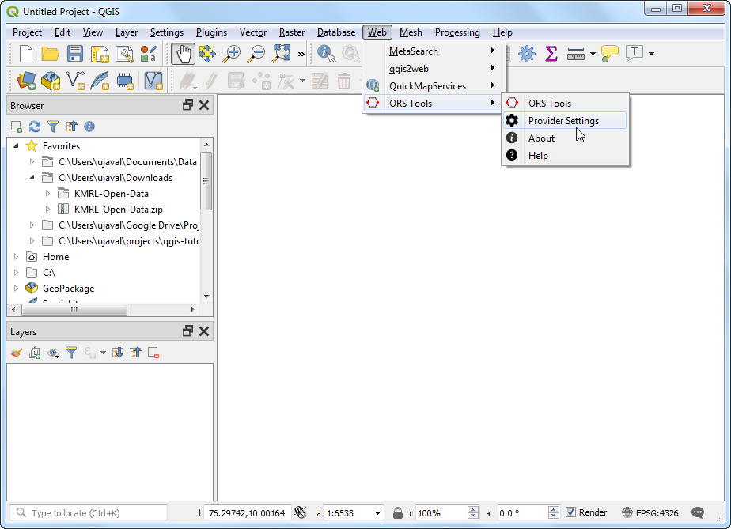
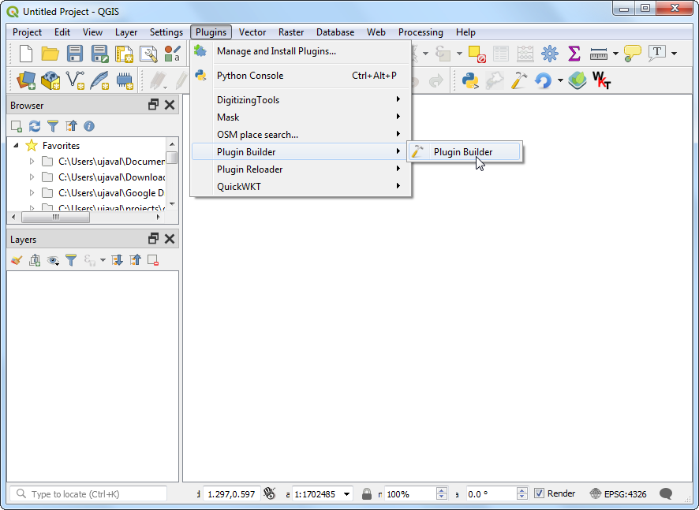

Analyse Servicegebied met Openrouteservice (QGIS3)¶
Analyse voor Servicegebied is nuttig voor het evalueren van de toegankelijkheid van locaties. Bekende locaties van brandweerkazernes, ziekenhuizen, stations voor openbaar vervoer etc. kunt u gebruiken voor dergelijke analyses om te identificeren welke gebieden vanuit die locaties kunnen worden bediend, ofwel op basis van een gereisde afstand, of op basis van verstreken tijd. Tot recent waren dergelijke analyses moeilijk met behulp van gereedschappen voor open-bron en gegevens. Maar nu hebben we toegang tot een een globaal netwerk van straten met OpenStreetMap (OSM) en gratis web-services, zoals Openrouteservice (ORS) die complexe taken voor routering kunnen uitvoeren met gegevens van OpenStreetMap (OSM). In deze handleiding zullen we de Plug-in ORS Tools gebruiken om een analyse voor een servicegebied uit te voeren in QGIS.
Overzicht van de taak¶
We zullen gegevens gebruiken van de metrostations voor Kochi, India om gebieden te bepalen die binnen een loopafstand van 15 minuten liggen.
Andere vaardigheden die u zult leren¶
Hoe General Transit Feed Specification (GTFS) gegevens voor transport te laden in QGIS.
Hoe puntgegevens van reeksen voor lijnen te laden met het gereedschap Punten naar pad.
De gegevens ophalen¶
Kochi Metro Rail Limited (KMRL) verschaft open gegevens voor de indeling Kochi Metro Rail Project in Global Transit Feed Specification (GTFS-static). Bezoek de pagina Open Data voor het verzoeken van gegevens.
Voor het gemak kunt u direct een kopie van de gegevensset downloaden vanaf de link hieronder:
Gegevensbron [KMRL]
Instellen¶
Openrouteservice API verschaft algoritmes voor routeren die werken met vrije geografische gegevens van OpenStreetMap. Het is een gratis web-gebaseerde service waartoe toegang kan worden verkregen via een plug-in van QGIS. Hoewel de service gratis is, moet u zich wel registreren en een API-sleutel ophalen. De API-sleutel wordt gebruikt om misbruik tegen te gaan en beperkingen voor het gebruik af te dwingen.
Bezoek de pagina Openrouteservice Sign Up en maak een account aan. Als uw account eenmaal is geactiveerd, bezoek dan uw Dashboard en vraag een token aan. Selecteer
Freeals het Token type en voerORS Tools QGISin als de Token name. Klik op CREATE TOKEN.

Eenmaal gemaakt, kopieer dan de lange tekenreeks die wordt weergegeven onder
Key. Dit is een unieke identificatie die is gekoppeld aan uw account die het gebruiken van deze service zal autoriseren.

Open QGIS. Ga naar . Zoek naar de plug-in ORS Tools en installeer die. Klik op Close.

Ga, in het hoofdvenster van QGIS, naar .

Vergroot het gedeelte openrouteservice en plak de
key(gekopieerd in stap 2) in het tekstvak API Key. Klik op OK.

Procedure¶
Unzip the downloaded
KMRL-Open-Data.zipfile to a folder on your computer. You will notice that the unzipped directory contains many text files. Each file contains data for a different aspect of the transit system. The format of the files and their uses are described in GTFS Reference. Out of all the files, 2 files contain geospatial data and are of interest to us. The fileshapes.txtcontains points that describe a physical path that the vehicle takes, and the filestops.txtcontains the location of each transit stop. Both of these are CSV files that can be imported into QGIS. Click the Open Data Source Manager button.

Schakel, in het dialoogvenster Gegevensbronnen beheren, naar de tab Tekengescheiden tekst. Klik op de knop … naast Bestandsaam en blader naar het bestand
shapes.txt. SelecteerCSV (komma gescheiden waarden)als de Bestandsindeling. De velden X-veld en Y-veld zouden automatisch moeten worden gevuld. Klik op Toevoegen.

Soortgelijk, klik opnieuw op de knop … en selecteer het bestand
stops.txt. Klik op Toevoegen `. Klik dan op :guilabel:`Close.

U zult 2 nieuwe lagen
stopsandshapeszien toegevoegd aan het paneel Lagen. Laten we de puntenlaagshapesconverteren naar een lijnenlaag die het pad van de metrolijn weergeeft. Ga naar .

Zoek en lokaliseer het algoritme . Dubbelklik om het te openen.

Selecteer, in het dialoogvenster Punten naar pad,
shapesals de Invoer puntenlaag. Zoals blijkt uit de specificaties van GTFS heeft elke individuele route een uniekeshape_id, dus selecteer die uit het keuzemenu als het Expressie groeperen pad. We kunnen ook de volgorde van punten specificeren die de lijn zullen vormen doorshape_pt_sequencete selecteren als het Volgorde expressie. Klik op Uitvoeren.

Een nieuwe laag
Padenzal worden toegevoegd aan het paneel Lagen. U kunt nu de zichtbaarheid van de laagshapesuitschakelen om de nieuw toegevoegde lijnenlaag te zien.

Nu we de metrostations en gegevens voor de lijn hebben toegevoegd, zijn we bijna klaar om de netwerkanalyse te beginnen. Zoek, in de Toolbox van Processing, naar en lokaliseer het gereedschap . Dubbelklik om het te openen.

Selecteer
openrouteserviceals de Provider. We zullen een polygoon vanuit elk metrostation berekenen voor een loopafstand van 15 minuten. Selecteerstopsals Invoer puntenlaag. Selecteerstop_idals het Input Layer ID Field. Selecteer, in de keuzelijst Travel mode,foot-walking. Selecteer, omdat we zijn geïnteresseerd in een op tijd gebaseerd gebied,timeals de Dimension. Voer tenslotte15minuten in als de ranges. Klik op Uitvoeren.

Notitie
Onthoud dat de API van Openrouteservice een beperking heeft van 20 verzoeken per minuut voor Isochronen. Als uw laag dus meer dan 20 punten heeft zou u fouten kunnen zien die aangeven dat de grens van de beperking is overschreden. U kunt het gereedschap gewoon laten uitvoeren en het zal doorgaan met de verwerking van 20 punten / min.
Als het gereedschap eenmaal is voltooid zult u een nieuwe laag
Isochroneszien geladen in het paneel Lagen. Elk punt heeft een geassocieerd polygoon die het gebied weergeeft dat wandelend binnen 15 minuten toegankelijk is. We kunnen de OpenStreetMap basiskaart toevoegen om dit in de context te zien van de gegevens die werden gebruikt om het te maken. Scroll naar beneden in het paneel Browser en lokaliseer . Sleep dat naar het kaartvenster.

Een nieuwe laag
OpenStreetMapzal worden toegevoegd aan het paneel Lagen. Sleep het naar beneden om de volgorde van de lagen te wijzigen en plaats het op de onderste plaats in de stapel met lagen. Zoom en verschuif om te zien of de resultaten overeenkomen met het wegennetwerk. U zult zien dat de polygonen geen cirkels zijn omdat de reistijd wordt berekend langs de wegen, zodat de regio’s die geen wegen hebben minder gebied bedekt zullen hebben.

We moeten nog een laatste taak voltooien om het servicegebied te berekenen. We kunnen individuele isochrone polygonen samenvoegen om één enkele polygoon te vormen die de gebieden weergeeft die toegankelijk zijn. Zoek en lokaliseer .

Selecteer
Isochronesals de Invoerlaag en klik op Uitvoeren.

Als de verwerking eenmaal is voltooid zult u een nieuwe laag
Samengevoegdzien toegevoegd aan het paneel Lagen. Deze polygonen geven de volledige regio weer die in het metrosysteem bereikbaar is binnen een loopafstand van 15 minuten.

Notitie
Dit is een eenvoudig voorbeeld van hoe een analyse voor servicegebieden voor een project van openbaar vervoer kan worden uitgevoerd in QGIS. Een meer uitgebreide analyse voor servicegebieden voor het metrosysteem zou andere modellen voor transport bevatten. We zouden bussen voor de aanvoer opnemen, nabijgelegen bushaltes en routes die die bushaltes bedienen om de analyse uit te breiden. We zouden ook het reizen op andere wijzen, zoals auto en taxi, kunnen opnemen.
If you want to give feedback or share your experience with this tutorial, please comment below. (requires GitHub account)